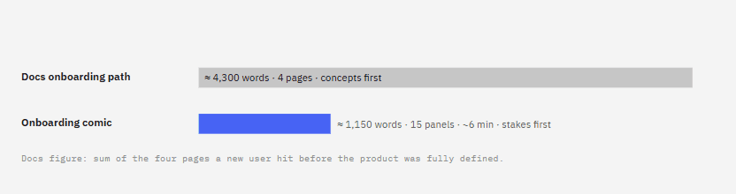

Explaining an invisible product with a 15-panel comic
The problem
API Control Plane watches API traffic and health across every gateway and runtime a company runs. The catch is that its value only shows up when something is missing: visibility you never had, or an outage you can't pin down. New users opening the docs got architecture diagrams and a glossary long before they got a reason to care.
So, I set one bar. After a single read, a first-time reader should be able to explain the product in one sentence without being prompted.
The solution
Why a comic? - Stakes before concepts
Docs answer "how does it work?". A first touchpoint has to answer "why should I care?". A story is the simplest way I know to put the stakes first: an outage on a Friday night, three dashboards giving three different answers, and a fix found in twenty minutes. Each product idea only shows up when a character actually needs it.
- Concrete stand-ins for abstract ideas: A "fragmented API landscape" became three delivery apps built by three different teams. "Unified visibility" became a city map lighting up. The main analogy, Google Maps, but for every API we own, is easy to repeat to a colleague, and that's the whole job of an analogy.
- Color tells part of the story: Panels 6 to 9 fade to gray during the outage, and Blue 60 only comes back once the product is online. Someone skimming the thumbnails can still follow the arc.
- A tone that suits enterprise readers: Warm and dry, but never silly. I kept to the Carbon palette and IBM Plex, and saved red and green for system states. The humor comes from understatement ("Keep Fridays boring") rather than mascots.

Accessibility - a comic that works with the images off
A comic is visual first, which raises an obvious question: what about readers who can't see it? I treated that as a content design problem with its own deliverables, planned from the start instead of patched in after launch.
aria-label written like narration rather than a list of objects. It says "Ria's glasses reflect the error codes," not "woman, monitors, plant."Color never carries meaning on its own. You can tell there's an outage from the error codes and the copy; the shift to gray just backs that up.
Outcome - the one-sentence test
In read-throughs, every reviewer could describe the product afterward without prompting. Most said some version of "it's a single control plane that discovers and monitors every API across all our gateways." That sentence is the metric I cared about. Everything else in the comic is there to get people to it.
What I would do differently:
I'd cut two of the setup panels, since 13 would tell the same story more tightly. I'd also give governance its own moment in the story instead of one line on the payoff card, so the product doesn't come across as just monitoring.